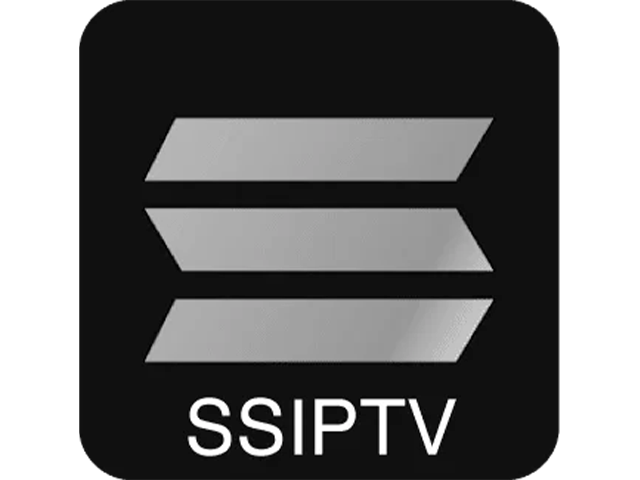
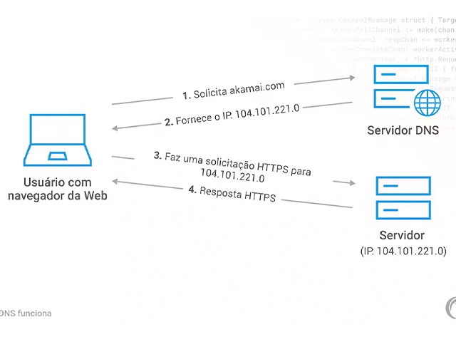

02 Como instalar na Tv sansung a Iptv?
Nesse tutorial você vai aprender a ativar e instalar A iptv na Smart Tv sansung. você vai ativar o App Ibo player na sua Tv, você vai ate a loja de aplicativos da sua tv e instale ele.

03 Como instalar a Iptv no Roku Tv?
Nesse tutorial vamos ativar o app QuickPlayer, você vai até a loja de aplicativos do seu aparelho baixa e instala ele.

04 Como instalar a Iptv no Fire Tv Stick?
Nesse tutorial você vai aprender a instalar qualquer app de Iptv no seu Fire Tv stick eu recomendo os apps ibo player, xciptv ou o quick player .

05 Como instalar a Iptv no celular iOS?
Nesse tutorial você vai até a loja de aplicativos a app store do seu celular Iphone Ios baixa e instala o app Smarters Player Lite.

06 Como instalar a iptv na sua Tv da LG?
Nesse tutorial você vai ate a loja de aplicativos da Lg e vai procurar pelo app iptv Smarters pro vai baixar e instalar.
.png)
07 Os piores e os melhores aplicativos para seus dispositivos Iptv
Todos nos gostamos de melhoras e de apps bons Iptv esse video e para você.

08 Como Instalar SMART STB NA SAMSUNG ANTIGA SERIE J
O Smart stb ajuda o servidor Warez ser instalado atraves do p2p.

09 COMO INSTALAR O APLICATIVO SSIPTV NA TV SAMSUNG ANTIGA ATUALIZADO 2024
Nesse tutorial você vai apredender a instalar Ssiptv na tv Sansung antiga para Instalar o servidor Warez com o sistema p2p.

10 Como baixar e instalar o servidor Warez TV no Firestick Tv ou Android Tv.
Nesse tutorial você vai aprender a instalar o servidor Warez no Fire tv stick ou Tvs androide.

11 Como funciona o mini teclado da Tv box?
O Mini teclado da Tv box funciona no computador na Smart Tv no Xbox na Tv box e nos Celulares ela funciona sem fiu com o transmisor bluetooth é uma mão na roda quando vai instalar Iptv ou P2p agilizando o trabalho.

12 Instalando o servidor Warez no Fire Tv stick e familia android.
Nesse outro tutorial vamos aprender a instalar o servidor Warez no Fire Tv stick na Smart Tv androide e nos outros aparelhos android.

13 Problemas com bloqueios na Tv Lg como resolver.
Nesse outro tutorial vamos aprender a trocar o Dns da Tv Lg pelo do google e desabilitar o Ipv6.

Dúvidas frequentes
Deve sim se possivel porque ainda existem muitas pessoas leigas sobre tecnologia, se elas forem idosas e pior ainda você tera que ensinar o basico sobre tecnologia para elas.
A iptv pode ser instalada com aplicativos tipo o Ibo player o Quick player e o Ibo player pro para isso deve-se ir ate a loja de aplicativos do seu aparelho procurar baixar e instalar um dos aplicativos citados aqui feito isso você vai ativar o seu programa com o dns e a chave de instalação tem varias pessoas que vendem essa ativação feito isso você vai ate o site o ficial do Aplicativo e coloque o seu dns a chave e depois coloque a lista Iptv feito isso dentro do aplicativo voce vai atualizar e logo na sequência ja vai estar funcionando.
Posso cobrar de 20 a 35 reais dependendo da qualidade do servidor o preço sempre esta corelacionado a qualidade.
Para ser um bom vendedor tem ser educado e carismatico, exitem dois tipos de vendedores os vendedores que estão começando agora e não faturam bem e com certeza vão ter que fazer tudo no boca a boca andando pela cidade e existem os vendedores que ja faturam 40 mil reais por mês o certo e investir 10mil reais por mês em markting digital dependendo do tamanho da população.
A Iptv depende de eletricidade, estabilidade da internet e estabilidade do servidor, como cliente você tem que entender que a Iptv não depende so do servidor mas tambem da estabilidade da sua internet as melhores Internetes são de fibra Ótica mas tem umas que tem o seu pingo de velocidade muito lento entrem no site minha conecção que ele vai mostrar qual a internet mais rapida sua Cidade.